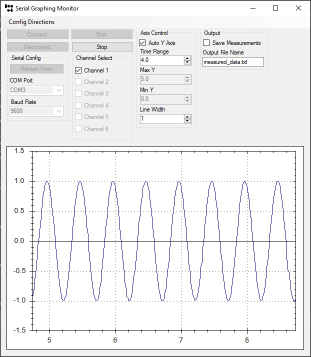

Serial Graphing Monitor - C# Windows Forms
was written after I developed the graphing program in Python. I found a desire to improve my knowledge of C# so I used this opportunity to write a program I needed.
In order to run the program you need to install ZedGraph.

Author: alex.kraljic@gmail.com
There is still a lot to fix, add, and improve, so any suggestions and corrections are welcome!